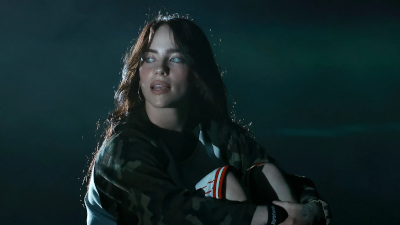
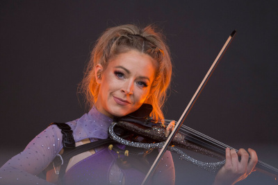
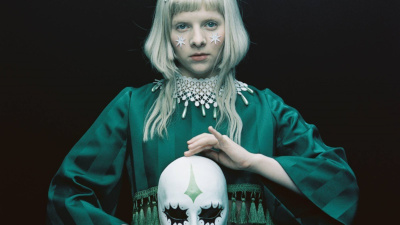

Divas Icônicas
Billie Eilish
Billie Eilish é uma das artistas mais influentes e inovadoras da música contemporânea. Desde o lançamento de seu primeiro álbum When We All Fall Asleep, Where Do We Go?, ela conquistou o público com uma sonoridade única, marcada por produções minimalistas, vocais suaves e letras profundas. Sua autenticidade e coragem para abordar temas como saúde mental, identidade e vulnerabilidade ajudaram a romper padrões na indústria musical e a criar um espaço mais honesto e inclusivo para os jovens.
Lindsey Stirling
Lindsey Stirling é uma violinista, compositora e dançarina norte-americana que revolucionou a música instrumental ao combinar violino clássico com elementos de música eletrônica, dubstep e pop. Desde sua participação no programa America's Got Talent em 2010, onde foi eliminada nas quartas de final, ela transformou a rejeição em motivação para construir uma carreira independente e inovadora. Seu canal no YouTube, criado em 2007, tornou-se um fenômeno global, acumulando mais de 14 milhões de inscritos e mais de 4 bilhões de visualizações até maio de 2025. Vídeos como "Crystallize" e "Roundtable Rival" destacam sua habilidade única de unir performance musical e dança em produções visuais cativantes.
Aurora Aksnes
Aurora Aksnes, conhecida artisticamente como AURORA, é uma cantora, compositora e produtora norueguesa nascida em 15 de junho de 1996 em Stavanger, Noruega. Desde o lançamento de seu EP de estreia Running with the Wolves em 2015, ela conquistou reconhecimento internacional com sua voz etérea e composições introspectivas. Seu primeiro álbum, All My Demons Greeting Me as a Friend (2016), recebeu aclamação da crítica e apresentou sucessos como "Runaway", que se tornou um hit global anos após seu lançamento inicial. Aurora é conhecida por mesclar elementos de electropop, folk nórdico e art pop, criando uma sonoridade única que aborda temas como natureza, espiritualidade e emoções humanas profundas.